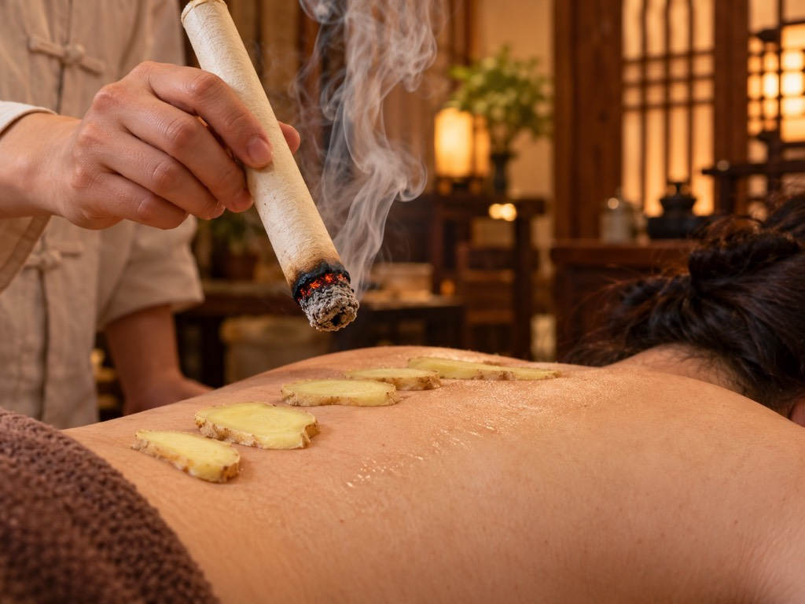
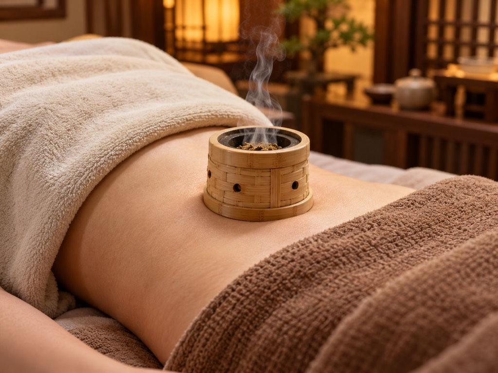
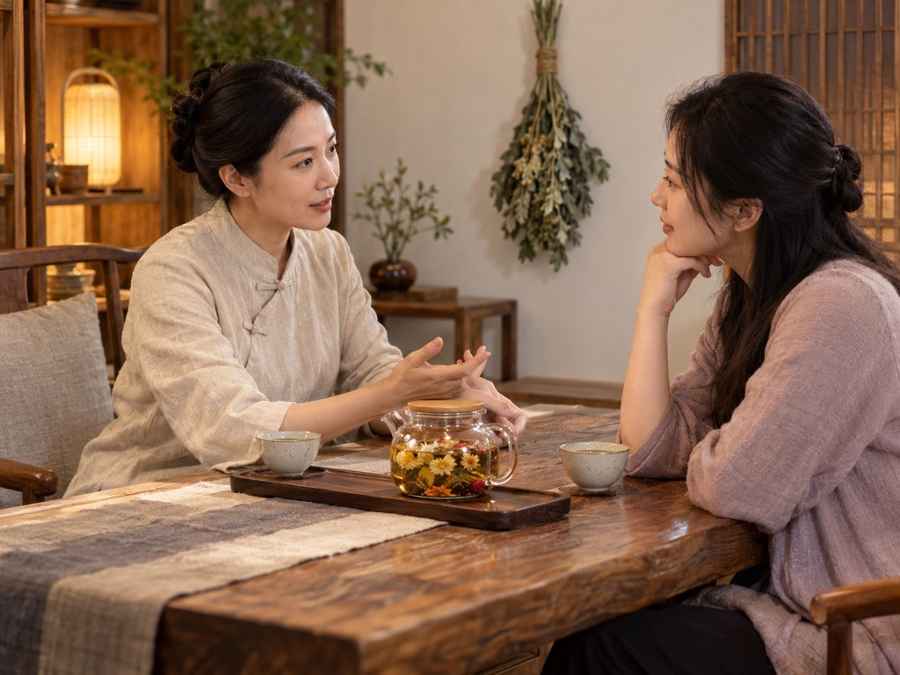
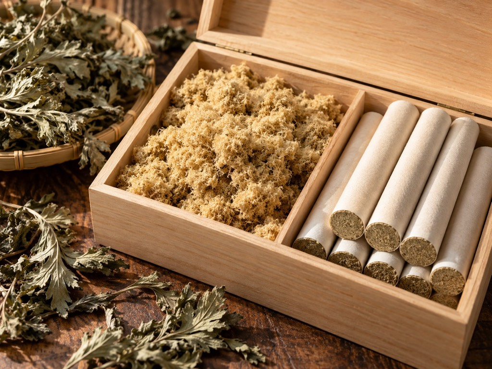

一人一体质，古法手工灸定制调理。主理人从业十余年，艾绒只用三年陈艾。不做套路推销，到店先问身体状态，再按体质安排灸法。
服务项目

古法手工灸
手工悬灸，温热渗透为主，适合怕烫、想温和调理的客人。

脐灸
灸肚脐（神阙），传统手法，适合脾胃虚寒、怕凉、容易疲劳的人群。

一人一体质定制调理
先做灸前问询，再按个人体质定灸法和时长，不做统一定式。
为什么选锦年
- 主理人从业十余年，手法是练出来的老手感。
- 艾绒只用三年陈艾，火力温而透，不追求烫。
- 一人一体质，每次到店按当天状态安排。
- 明码标价，单次 128-398 元，办卡自愿，不硬推销。

常见问题
第一次去艾灸馆是什么流程？
提前预约到店后先做灸前问询（身体状态、怕烫程度、有无不适），再换衣灸疗，全程约 60-90 分钟，灸后建议补水、当天避免吹冷风。
艾灸是越烫越有效吗？
不是。我们以温热渗透、皮肤能耐受舒适为准，过烫反而容易起灸花，温而透的感觉才是对的。
多久做一次合适？
因人而异。多数客人一周 1-2 次比较常见，具体由灸前问询后按个人状态安排。
灸后要注意什么？
灸后建议温水补水、当天不洗冷水澡、避免空调直吹和剧烈运动，早点休息体验更好。
做一次大概什么价位？
单次 128-398 元，按项目和使用艾绒时长定，到店灸前问询后报价，不加隐性消费。
昌邑艾灸馆怎么选？
建议实地看三点：艾绒品质（是否陈艾）、是否一人一体质（还是统一定式）、灸后身体反应。锦年艾灸生活馆欢迎到店对比，昌邑奎聚街道周边均可到店。
门店信息
- 门店
- 锦年艾灸生活馆（昌邑奎聚街道）
- 地址
- 昌邑市奎聚路115号君悦花园南门
- 电话
- 19053630970
- 营业时间
- 8:00-18:00
- 价格
- 单次 128-398 元
- 预约方式
- 电话 19053630970，或各平台私信「艾灸」
昌邑·锦年艾灸生活馆｜到店体验私信「艾灸」